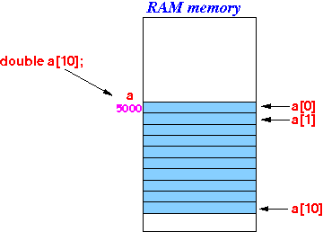

- Recall that defining
an array in Java is
a two step process:
Java: 1. Define an array object variable: Example: double[] a; 2. Create the array: Example: a = new double[10];
- Array in C:
- In contrast, defining an array in C is a one step process ------ just like defining ordinary variable !!!
- Syntax to define an
one dimensional array
in C
before C99 (C standard 1999):
DataType varName [ constantSize ] ;
- Example:
double a[10]; // Define an array of 10 variables of type double int b[20]; // Define an array of 20 variables of type int
- This is what will happen inside the computer when
you define an array in C:
 Explanation:
- The computer will reserve
memory cell to store the elements of the
array
- The computer will remember that the
symbol name a
is associated with the
first allocated memory cell
of the array
- In the example, the computer will
remember that
symbol a is equal
to
5000 !!!
(BTW, this is exactly the same as using a: ds.l 10 in m68000 !!!)
- In the example, the computer will
remember that
symbol a is equal
to
5000 !!!
- The computer will reserve
memory cell to store the elements of the
array
- Example:
#include <stdio.h> int main( int argc, char* argv[] ) { double a[10]; int i; for ( i = 0; i < 10; i++ ) a[i] = i; for ( i = 0; i < 10; i++ ) printf( "a[%d] = %lf\n", i, a[i] ); }Output:
a[0] = 0.000000 a[1] = 1.000000 a[2] = 2.000000 a[3] = 3.000000 a[4] = 4.000000 a[5] = 5.000000 a[6] = 6.000000 a[7] = 7.000000 a[8] = 8.000000 a[9] = 9.000000
- Example Program:
(Demo above code)

- Prog file: /home/cs255001/demo/C/set1/array1.c
How to run the program:
- To compile: gcc array1.c
- To run: ./a.out
- The C99 standard allows for the
definition of
variable length arrays in
C99:
dataType arrayName[ variableName ];
Example:
#include <stdio.h> int main( int argc, char* argv[] ) { int N = 10; double a[N]; // Variable length array (length depends on current value in N) int i; for ( i = 0; i < N; i++ ) a[i] = i; for ( i = 0; i < N; i++ ) printf( "a[%d] = %lf\n", i, a[i] ); }
- Example Program:
(Demo above code)
- Prog file: /home/cs255001/demo/C/set1/array04.c
How to run the program:
- To compile: gcc array04.c
- To run: ./a.out
- The name of an array in
C:
- The name of an array in C is equal to the starting address of the array
- Experiment:
the following C program prints
the value of the name of an array and
the value of the address of the first element in an array.
int main( int argc, char* argv[] ) { double a[10]; printf(" a = %u\n", a); // Print array name printf(" &a[0] = %u\n", &a[0]); // Print address of first elem. }Output:
a = 4290768640 &a[0] = 4290768640 (EQUAL !)
- Example Program:
(Demo above code)
- Prog file: click here
How to run the program:
- Right click on link(s) and
save in a scratch directory
- To compile: gcc array-name1.c
- To run: ./a.out